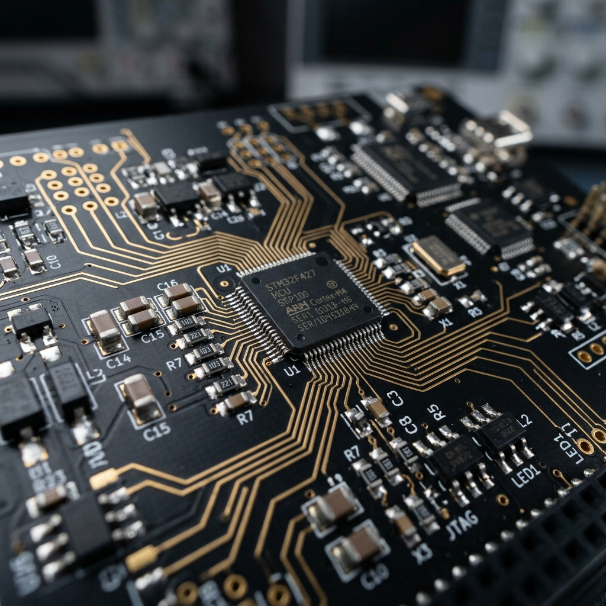
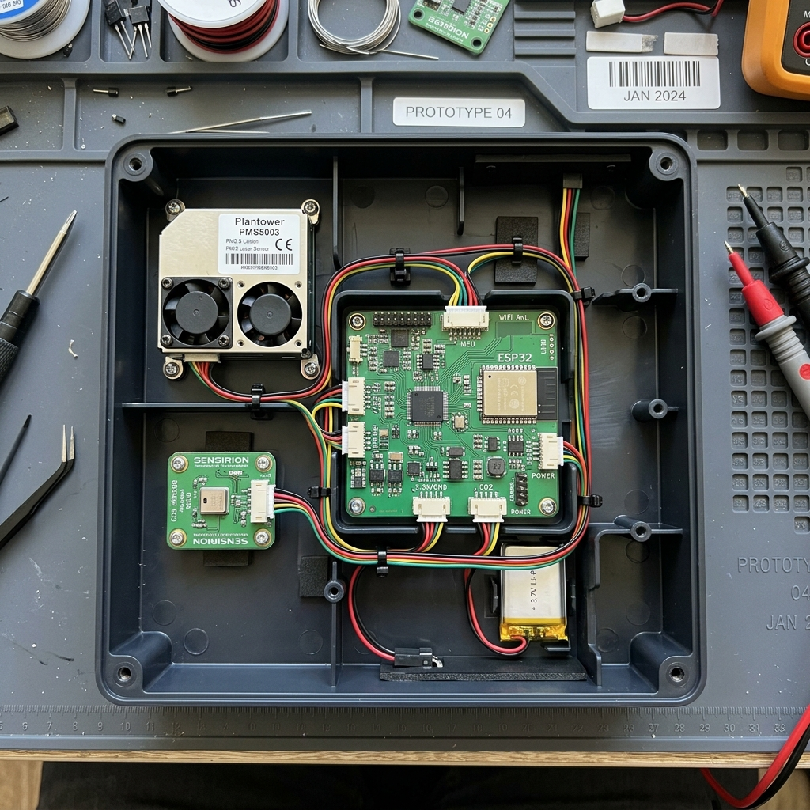
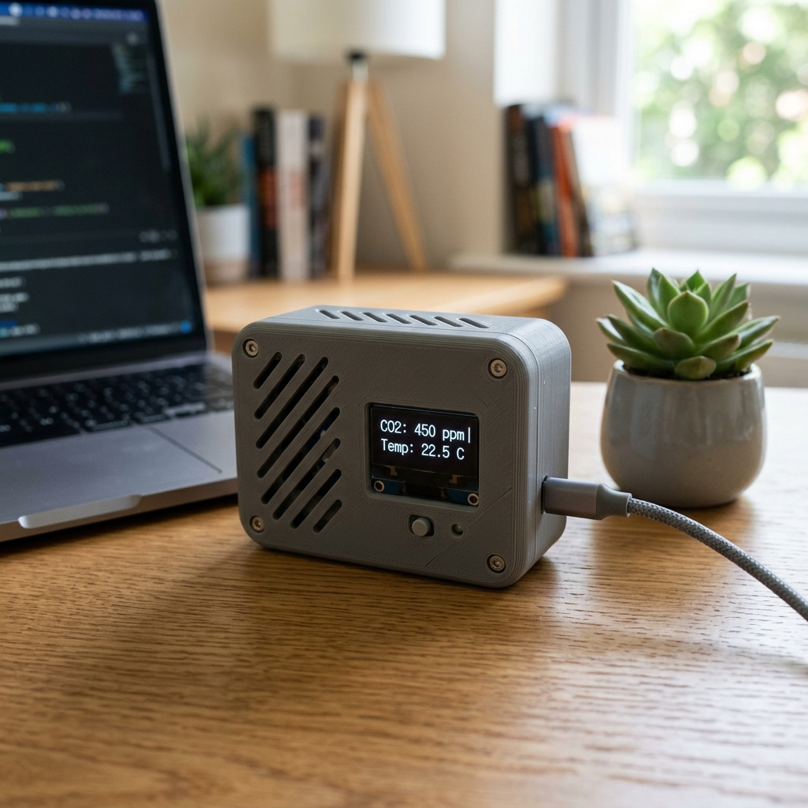

The genesis of the Air Analyzer was driven by the global COVID-19 lockdowns, a period that abruptly severed our connection to nature and highlighted the critical importance of indoor air quality. Too often, climate-damaging habits persist simply because poor air quality remains invisible. By engineering a device to transparently display essential air parameters, the invisible becomes actionable.
System Architecture & Hardware Design
To ensure optimal component placement and modularity, the hardware architecture was divided into two distinct, custom-routed PCBs connected via a ribbon cable:
- The Main Board: Serves as the central processing unit, housing the microcontroller, power supply regulators (LM1117 5V and 3V3), and the primary sensor array.
- The HMI Board: Houses the 2.8-inch SPI TFT display, tactile switches, potentiometer for backlight control, a 90dB piezo buzzer for threshold alarms, and status LEDs.
Hardware Engineering & Assembly



Industrial-Grade Sensor Array
- Sensirion SPS30: MCERTS-certified optical sensor utilizing laser scattering for highly precise PM2.5 (fine dust) measurement.
- Sensirion SGP30: A multi-pixel CMOSens® gas sensor for tracking TVOC and eCO2.
- Freescale/NXP MPL3115A2: Piezoresistive absolute pressure sensor with built-in altitude calculations and an I2C interface.
- Grove Luminance Sensor: Measuring ambient light intensity, paired with a custom-calculated Rail-to-Rail operational amplifier (AD8615) to scale the 2.3V output to the required 5V logic level.
Embedded Software & Protocol Integration
The system is driven by a Freescale NXP MC9S08AW32 microcontroller. Rather than relying on high-level abstractions like C, the final software was written entirely in Assembler to maximize control and efficiency.
- Modular Codebase: The software utilizes a highly modular structure to separate initialization routines, sensor polling, TFT rendering, and button logic.
- Multi-Protocol Communication: The MCU simultaneously orchestrates I2C, UART, and SPI.
- Overcoming Bottlenecks: A major technical hurdle involved debugging the TFT initialization sequence. By analyzing the SPI clock signal via an oscilloscope, it was discovered that the baud rate was exceeding the component's limits, clipping the 5V signal at 3V. Adjusting the internal clock scaling resolved the timing fault.
Commercial Viability & Project Management
This project was executed under strict project management frameworks, utilizing Gantt charts and defined Working Packages (WPs) to track progress.
- BOM (Bill of Materials): The raw component cost for a single prototype unit totaled approximately €258.27.
- Labor Tracking: The development cycle required exactly 192 documented working hours.
- Scale Projections: The total R&D cost for unit #1 was calculated at €3,854.77. However, simulated scaling demonstrated that a production run of 1,000 units would drastically reduce the per-unit cost.